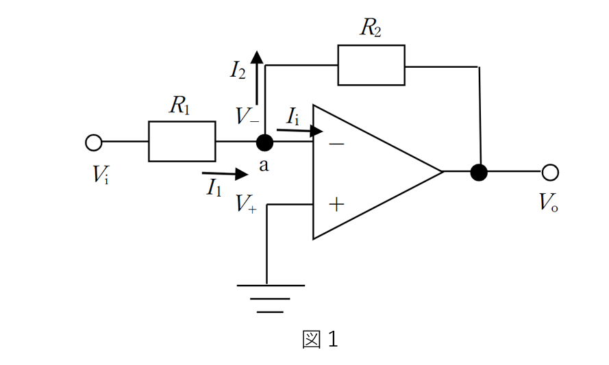

電子回路テスト対策
問１：図１の回路について以下の問いに答えよ。
(2)(1)の方程式をオームの法則より電圧の式に変形せよ。
(3)\(V_{o}\)を導出せよ。

(1)点aについてキルヒホッフの電流測の方程式を立てよ。
(2)(1)の方程式をオームの法則より電圧の式に変形せよ。
(3)\(V_{o}\)を導出せよ。
【解答】
(1)キルヒホフの電流測は、
点に流れ込む電流=点から流れ出る電流
より、 \begin{align} I_{1}&=I_{2}-I_{i} \\ I_{1}-I_{2}+I_{i}&=0 \end{align} (2)オームの法則より（電流の向きに注意）、 \begin{align} &I_{1}=\frac{V_{i}-V_{-}}{R_{1}}& &I_{2}=\frac{V_{-}-V_{o}}{R_{2}}& \end{align} また、
理想オペアンプの特性
入力インピーダンスが無限大（\(Z_{i}=\infty\)）
出力インピーダンスがゼロ（\(Z_{o}=0\)）
電圧増幅率が無限大（\(A=/infty\)）
より、入力インピーダンスダンスが無限大なので、 \begin{align} I_{i}=0 \end{align} これらを(1)で導出した式に当てはめて、 \begin{align} \frac{V_{i}-V_{-}}{R_{1}}-\frac{V_{-}-V_{o}}{R_{2}}+0=0 \end{align} (3)オペアンプでは、
プラス入力端子とマイナス入力端子の電圧差がゼロに近く、仮想的にショートしている状態(バーチャルショート)
が起こるので、
\begin{align}
V_{+}=V_{-}
\end{align}
の関係が成立する。
そのため、\(V_{+}=0[V]\)より、 \begin{align} V_{+}=V_{-}=0[V] \end{align} これを(2)で求めた式に代入すると、 \begin{align} \frac{V_{i}}{R_{1}}+\frac{V_{o}}{R_{2}}&=0 \\ \\ \frac{V_{o}}{R_{2}}&=-\frac{V_{i}}{R_{1}} \\ \\ V_{o}&=-\frac{R_{2}}{R_{1}}V_{i} \end{align}